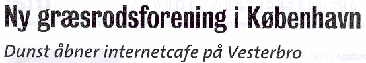
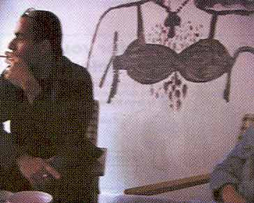
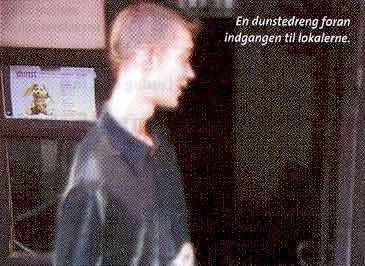

| Maj 2002 |

| Jacob Nicu |
 |
Stearinlysene blafrer på bordene. I køkkenet står Jesper og bager pandekager, mens musikken strømmer ud fra web-rummet. Vi er i "dunst", københavns nye græsrodsforening for homoer og transseksuelle.
"Det er første gang, vi har fået vores egen internet-café i miljøet. Den er åben for bøsser, lesbiske og transvestitter, der har lyst til at møde hinanden på en anden måde end i byens kommercielle værtshuse og diskoteker," fortæller Jacob. Han er daglig koordinator i dunst, der har til huse i Sommerstedgade på Vesterbro. dunst er åben på hverdage fra 16-20 samt lørdage og søndage fra 15-17. "Men vi bliver længere, hvis stemningen er til det," siger Jacob.
Internet-caféen er det første skridt i etablering af værksteder i Sommerstedgade. Et sy- og et malerværksted er på vej, og dem, der bare vil drikke en kop kaffe er også velkomne.
Sidste søndag i hver måned er der brunch kl. 14:00, og priserne er lave, så man kan være med selvom man er på bistand.
| Jesper |
 |
Engagementet er højt blandt folkene, der skabte dunst. Foreningen blev stiftet for et år siden. Sidste sommer blev der holdt en støttefest, og senere blev lokalerne i Sommerstedgade 30 fundet.
Nu bliver ambitionerne yderligere skruet op, når årets støttefest skal holdes den 8. juni i lokalerne ved rampen ved Dybølsbro Station. (i bygningen mellem S-togsporene).
"Det bliver bare en flot fest," siger Jørgen. Han er formand, eller rettere for-trans for dunst, og skal på scenen i et at dragshowene. Ud over drag-artists vil der til festen være live band, danse shows og meget mere.
Selvom dunst holder til på Vesterbro, kommer mange af medlemmerne fra Nørrebro, Amager og Valby, ja, selv Amsterdam kommer der medlemmer fra. Allerede fra starten var det tydeligt, at mange trængte til en anden måde at mødes på end bare ved at drikke bajere og jagte rundt i det nogle gange kolde byliv. I begyndelsen kom der udelukkende bøsser og transsekuelle i dunst, men foreningen har udvidet sig til også at omfatte lesbiske.
"Hver gruppe har sine stærke sider, og det er bedst, hvis vi ikke isolerer os, men er åbne for andre," siger Bjarne-pigen, der er kasserer i dunst.
"dunst bygger på, at det er medlemmerne, der bestemmer, hvad der skal ske. Der er ikke en bestyrelse, der kører en stiv plan, men det enkelte menneske, der har indflydelse. Er der en, der vil indrette syvækstedet på en anden måde, og vil lægge kræfterne i det , så er det for eksempel muligt. Det er kun fantasien , der sætter grænser," siger Jacob.
Som alle andre priser i dunst er også medlemsskabet billigt. 50 kroner koster det.
"Foreløbig har vi 45 medlemmer, med vi ser frem til at byde flere velkommen," slutter Jacob.
Print denne side